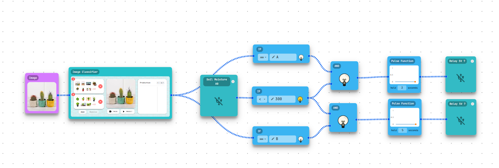

ชื่อโครงงาน: ระบบรดน้ำต้นไม้อัตโนมัติ
โครงงานนี้มีวัตถุประสงค์เพื่อออกแบบและพัฒนาระบบรดน้ำพืชอัตโนมัติ โดยเน้นด้านการตรวจสอบชนิดพืชและให้ปริมาณน้ำตามประเภทพืชที่ตรวจจับได้ ลิ้งสไลด์ : https://www.canva.com/design/DAGvKhVJnnk/

สรุปการทดลอง-ใช้เครื่่องวัดความชื้นในวัดความชื้นดิน,กล้องในการตรวจชนิดพืช
ผลลัพธ์เบื้องต้น-เครื่องปั้มน้ำทำงานเมื่อดินแห้งถึงจุดที่กำหนด,และตรวจชนิดพืชเพื่อกำหนดการให้น้ำที่เหมาะสม
วัตถุประสงค์ของโครงงาน
- เพื่อพัฒนาระบบรดน้ำพืชอัตโนมัติที่สามารถควบคุมปริมาณน้ำตามความต้องการของพืช
- พัฒนาต้นแบบฮาร์ดแวร์และซอฟต์แวร์ที่เชื่อมต่อได้จริง
- ทดสอบในสถานการณ์จำลองและปรับปรุงตามผลลัพธ์
โปรแกรมที่ใช้
1
TinkerCad
2
AiThaiGen
3
Arduino
วิธีการดำเนินงาน
รายละเอียดขั้นตอนการพัฒนา: การออกแบบวงจร, วางระบบ, ทดสอบ, แก้ไข
- กำหนดโครงงานที่จะทำและขอบเขต
- ออกแบบในTinkerCad
- นำอุปกรณ์ที่ต้องใช้พร้อมวางระบบการทำงานด้วยโปรแกรมAiThaiGen
- ทดสอบและแก้ไข
- นำเสนอ
เดโม

สมาชิกทีม
พชร วงศ์สุวรรณ
หัวหน้าทีม — จัดวางระบบการทำงาน
ชินภัทท์ ก่อกิจเจริญกุล
ออกแบบโมเดลจำลอง
ธนกร เจริญโพธิ์
ทดสอบและเก็บข้อมูล